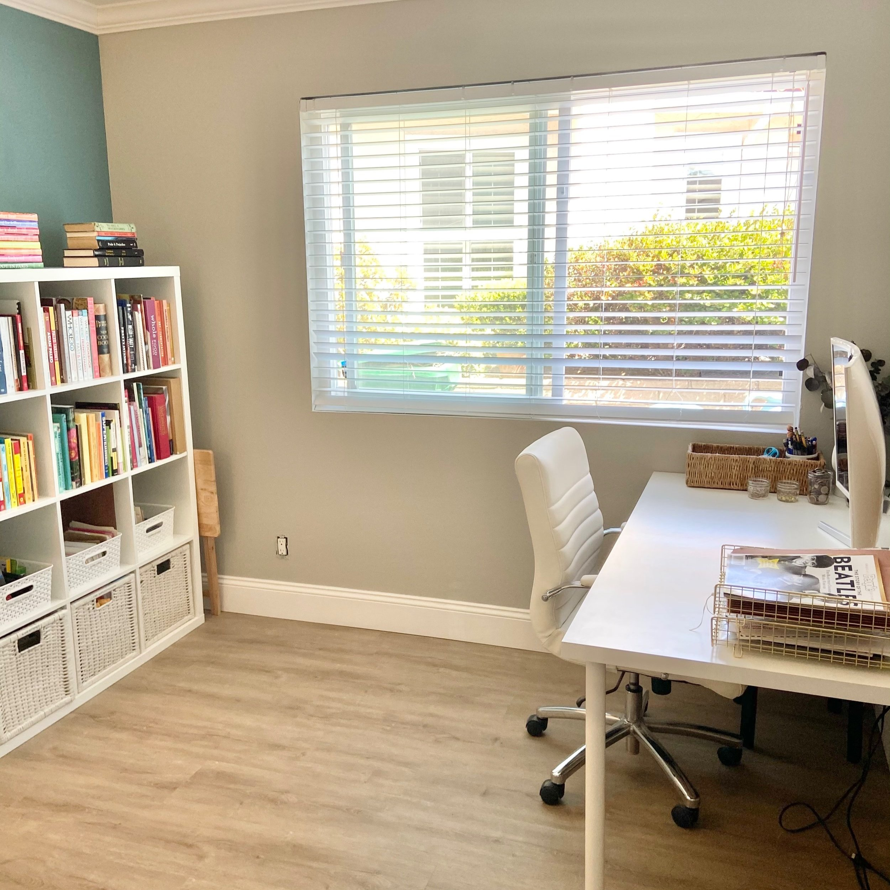

The Hidden Dangers of Clutter: The Cause of Unnecessary Stress and Chaos in Your Home
Your home is meant to be a haven, a place where you can relax and rejuvenate, away from the chaos and stress of the outside world. However, for many, this vision of an idyllic home can be disrupted by one common culprit: clutter. The clutter in your home isn't just a physical mess; it can lead to emotional chaos and added stress. In this article, we'll explore how clutter can have a detrimental impact on your life and provide you with insights into why decluttering is so important.
Physical Stress: First and foremost, clutter creates physical stress. Tripping over items, searching for lost belongings, or navigating through cramped spaces can lead to accidents and injuries. It's easy to underestimate the physical toll clutter takes, from strained muscles to more serious accidents. The physical stress alone should be motivation enough to declutter your home.
Mental and Emotional Stress: Clutter is not just about the physical disarray; it's also about the mental and emotional chaos it can create. When your living space is cluttered, it can be overwhelming, and the constant reminder of disorganization can lead to stress and anxiety. A cluttered environment can make it difficult to relax and concentrate, disrupting your mental well-being.

Reduced Productivity:
A cluttered home can be a major barrier to productivity. Whether you're working from home, studying, or pursuing hobbies, clutter can make it challenging to find the tools and resources you need. It's a constant distraction, pulling your focus away from what you should be doing. This lack of productivity can, in turn, lead to additional stress as you struggle to meet your goals and responsibilities.
Wasted Time: Time is one of our most precious resources, and clutter can be a significant thief of your time. How often have you spent hours searching for your keys, a specific document, or even your favorite pair of shoes, only to realize that clutter was the culprit? All the time spent on these fruitless searches could have been put to better use, contributing to stress as you feel the pressure of wasted moments.
Relationship Strain: Clutter can affect not only your well-being but also your relationships. Disagreements about tidiness and clutter can lead to conflict between family members or housemates. This strain on relationships adds another layer of emotional stress that can be easily avoided by keeping your space organized.
Financial Impact: The financial impact of clutter often goes unnoticed. Clutter can lead to unnecessary purchases. When you can't find an item, you might end up buying a replacement, only to discover the original later. It also can be challenging to stick to a budget or make informed financial decisions when your home is cluttered and disorganized.
Aesthetic Chaos: Your environment can have a significant impact on your mood and overall well-being. A cluttered, chaotic space can be aesthetically displeasing, leading to dissatisfaction and discontent. On the other hand, a well-organized and tidy space can create a sense of calm and satisfaction.

Health Consequences::
Clutter can also have health implications. Dust, allergens, and pests can accumulate in cluttered areas, leading to health problems for you and your family. Poorly maintained spaces can contribute to respiratory issues and other health concerns.
In conclusion, clutter is more than just a collection of things in your home; it can have far-reaching effects on your physical health, mental and emotional well-being, productivity, relationships, and even your finances. Recognizing the hidden dangers of clutter is the first step towards making a positive change in your life. Start by decluttering your home, one space at a time, and reap the benefits of a cleaner, more organized, and less stressful living environment. Your home should be a place of serenity and sanctuary; don't let clutter disrupt that peace any longer.